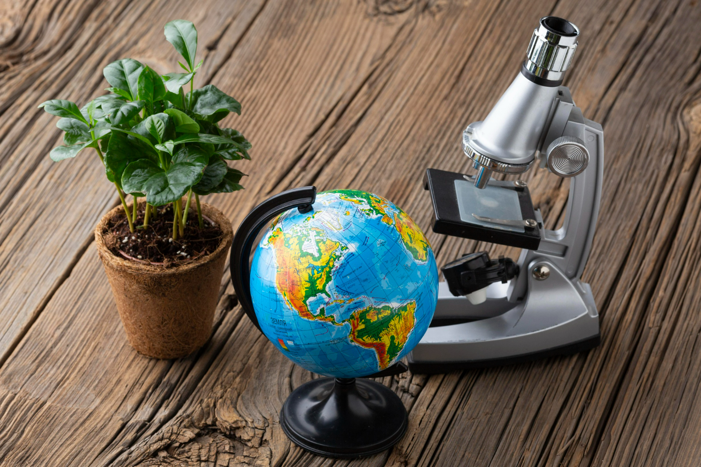

Texto
Vida en biología: definición científica y características esenciales

La vida en biología representa uno de los conceptos más fascinantes y complejos que la ciencia moderna intenta comprender. Aunque a simple vista parece un fenómeno común y cotidiano, su estudio abarca desde las formas más simples de organismos unicelulares hasta las estructuras biológicas más complejas y evolucionadas. Definir qué es la vida es un desafío debido a su naturaleza dinámica, diversa y multifacética, que involucra características esenciales que distinguen a los organismos vivos del resto de la materia inanimada.
Organización celular
Es la base estructural y funcional de todo ser vivo. Todos los organismos están formados por una o más células, las cuales realizan las funciones necesarias para la vida. Existen seres unicelulares (una célula) y pluricelulares (muchas células)

Metabolismo
Conjunto de reacciones químicas que ocurren dentro de las células para obtener energía y realizar funciones vitales como el crecimiento o la reparación. Se divide en anabolismo (síntesis de sustancias) y catabolismo (degradación de sustancias)

Homeostasis
Capacidad del organismo para mantener estables sus condiciones internas (como temperatura, pH o niveles de glucosa), a pesar de los cambios del entorno. Es esencial para la supervivencia y equilibrio del cuerpo

Crecimiento y desarrollo
Proceso mediante el cual los organismos aumentan su tamaño y complejidad estructural. Implica cambios físicos, fisiológicos y, en algunos casos, conductuales, que permiten alcanzar la madurez

Reproducción
Capacidad de los seres vivos de generar nuevos individuos semejantes a ellos. Puede ser sexual, cuando intervienen dos progenitores, o asexual, cuando solo participa uno